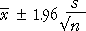

Use this diagram to show that the confidence level can be much less than 95% if you simply replace

with

- Estimating σ causes extra variability.
- When n is large, the confidence level is close to 95%.
Firstly leave Use sample SD unchecked, click Accumulate and take 100 samples of size n = 30. Note that about about 95% include µ = 12.
Click Use sample SD to see how the CIs would change with σ replaced by s. Since n is large, the CIs do not change much.
Change the sample size to n = 5 and repeat. The CIs change more when the sample SD is used — their widths vary from sample to sample. Intervals based on s now include µ = 12 much less often than 95% of the time.
Repeat with n = 3.